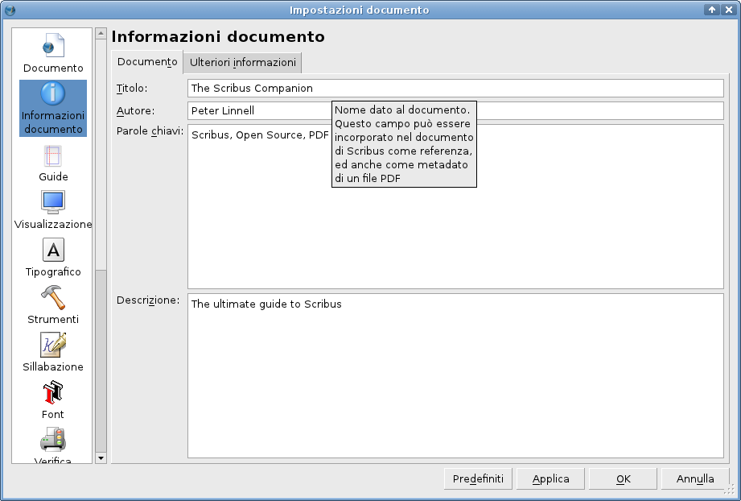
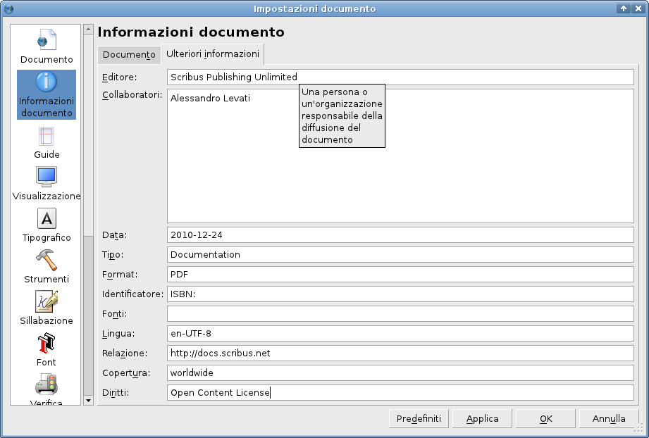

Due punti importanti devono essere tenuti presenti nel pannello “Informazioni documento”:
Nella prima scheda, “Documento”, poete inserire i metadati per il PDF. Notate che questi sono un sottoinsieme di quelli Dublin Core:
|  |
La seconda scheda, “Ulteriori informazioni”, contiene campi definiti dalle specifiche Dublin Core:
|  |
| Editore | La persona od organizzazione che ha la responsabilità di aver reso disponibile o di aver stampato il documento. |
| Collaboratori | Una persona o un'organizzazione che ha contribuito al contenuto del documento. |
| Data | Una data associata a un evento nel ciclo di vita del documento, in formato YYYY-MM-DD, come previsto da ISO 8601. |
| Tipo | La natura o il genere del contenuto del documento, ad esempio categorie, funzioni, ecc. |
| Formato | La manifestazione fisica o digitale del documento. Sarebbe opportuno indicare le dimensioni e il tipo di supporto. Vedi anche RFC2045, RFC2046 per i tipi MIME. |
| Identificatore | Un riferimento univoco al documento entro un certo contesto, come ad esempio un ISBN o URI. |
| Fonte | Un riferimento a un documento dal quale il presente documento è derivato, ad esempio un ISDN o URI. |
| Lingua | La lingua in cui il contenuto del documento è scritto, di solito un codice di lingua ISO-639. Facoltativamente con l'aggiunta di un trattino e di un codice paese ISO-3166, ad esempio en-GB, fr-CH. |
| Relazione | Un riferimento a un documento correlato, possibilmente con l'uso di un identificatore formale come un ISBN o URI. |
| Copertura | L'ampiezza o l'ambito del contenuto del documento, includendo possibilmente la locazione geografica, l'estensione temporale e giurisdizionale. |
| Diritti | Informazioni sui diritti detenuti nel e sul documento, ad esempio copyright, brevetti o marchi. |